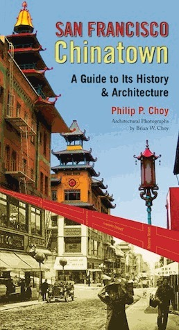
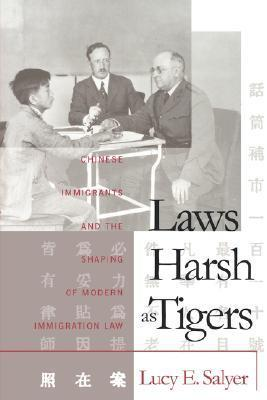
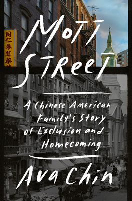

“In American Chinatown, Bonnie Tsui takes an affectionate and awestruck look at the bustling part of town that has bewitched her ever since she was a child, when she would eagerly await her grandfather’s return from the fortune cookie factory. By interweaving her own personal impressions with the experiences of those living in Chinatowns all across the United States today, Tsui beautifully captures its vivid stories, giving readers a deeper look into what “Chinatown” means to its inhabitants—and to America at large.” (Simon and Schuster)
San Francisco Chinatown is the first book of its kind—an "insider's guide" to one of America's most celebrated ethnic enclaves by an author born and raised there. Written by architect and Chinese American studies pioneer Philip P. Choy, the book details the triumphs and tragedies of the Chinese American experience in the U.S. Both a history of America's oldest and most famous Chinese community and a guide to its significant sites and architecture, San Francisco Chinatown traces the development of the neighborhood from the city's earliest days to its post-quake transformation into an "Oriental" tourist attraction as a pragmatic means of survival. Featuring a building-by-building breakdown of the most significant sites in Chinatown, the guide is lavishly illustrated with historical and contemporary photographs and offers walking tours for tourists and locals alike.” (Amazon)
“Focusing primarily on the exclusion of the Chinese, Lucy Salyer analyzes the popular and legal debates surrounding immigration law and its enforcement during the height of nativist sentiment in the early twentieth century. She argues that the struggles between Chinese immigrants, U.S. government officials, and the lower federal courts that took place around the turn of the century established fundamental principles that continue to dominate immigration law today and make it unique among branches of American law. By establishing the centrality of the Chinese to immigration policy, Salyer also integrates the history of Asian immigrants on the West Coast with that of European immigrants in the East.” (The University of North Carolina Press)
“A sweeping narrative history of the Chinese Exclusion Act through an intimate portrayal of one family’s epic journey to lay down roots in America
*A Good Morning America , TIME , Book Riot, and Kirkus Most-Anticipated Book*
Gorgeously written, deeply researched, and tremendously resonant, Mott Street uncovers a legacy of exclusion and resilience that speaks to the American experience, past and present.” (Goodreads.com)
Chinese Exclusion Act (1882), National Archives
Angel Island Immigration Station, HISTORY.com
Asian American Timeline, HISTORY.com
Japanese Internment Camps, HISTORY.com
How 1800s Racism Birthed Chinatown, Japantown, and other Ethnic Enclaves, NBC News
Chinatown's Hidden Poverty: How a Big Family Struggles to Survive in a Tiny Room, SF Standard
A Wave of SRO Listings Have Set Chinatown on Edge, SF Chronicke
“Examine the origin, history and impact of the 1882 law that made it illegal for Chinese workers to come to America and for Chinese nationals already here ever to become U.S. citizens. The first in a long line of acts targeting the Chinese for exclusion, it remained in force for more than 60 years.” (PBS.com)
Hollywood Chinese from DeepFocus Productions, Inc. on Vimeo.
“Hollywood Chinese is a captivating look at cinema history through the lens of the Chinese American experience. Directed by triple Sundance award-winning filmmaker, Arthur Dong, this documentary is a voyage through a century of cinematic delights, intrigues and treasures. It weaves together a wondrous portrait of actors, directors, writers, and movie icons who have defined American feature films, from the silent era to the current new wave of Asian American cinema. At once entertaining and enlightening, Hollywood Chinese reveals long-untold stories behind the Asian faces that have graced the silver screen, and weaves a rich and complicated tapestry, one marked by unforgettable performances and groundbreaking films, but also by a tangled history of race and representation.” (IMBd)
This page compiled by Maddy Cummins and Rodrigo Laux.